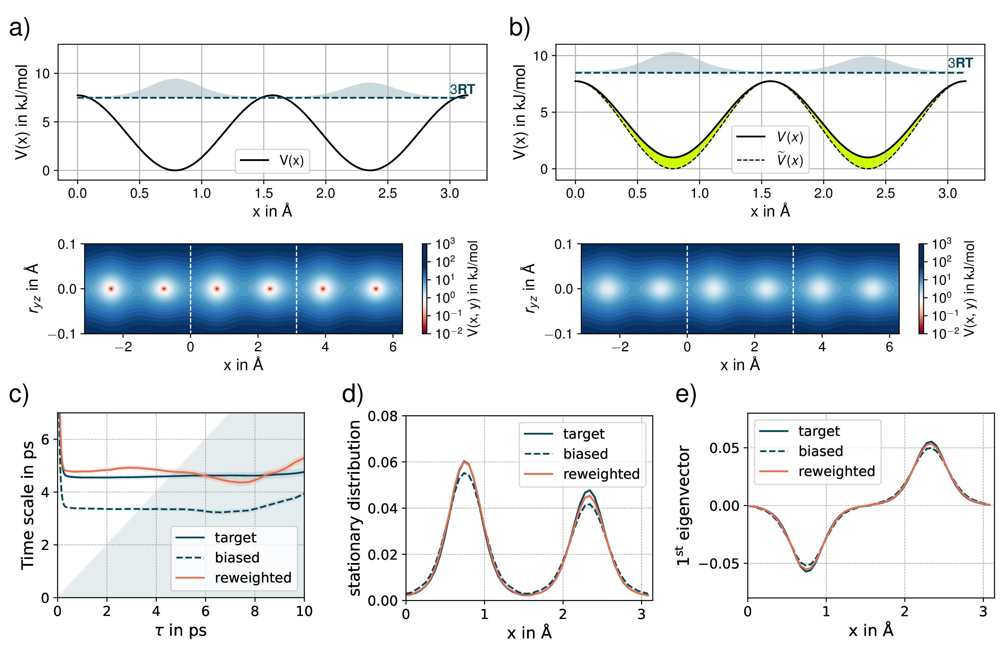
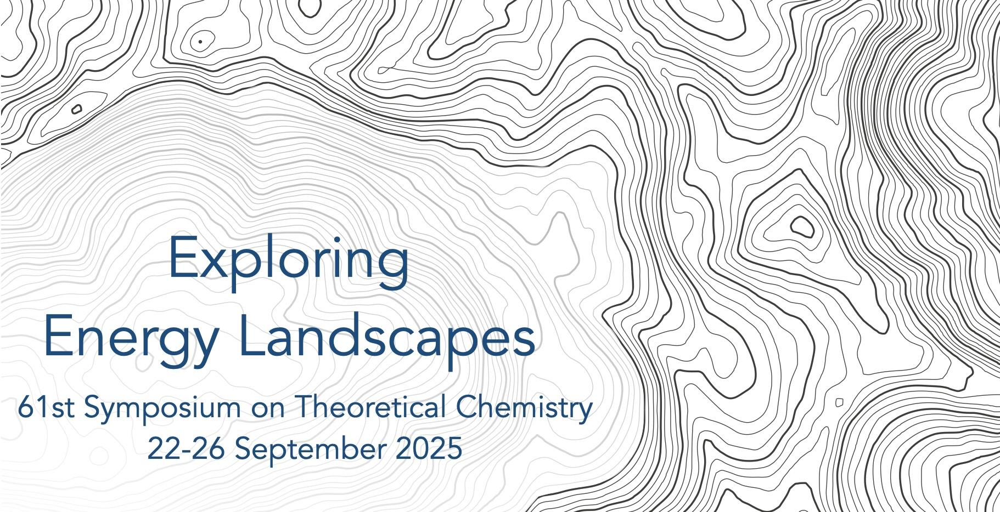
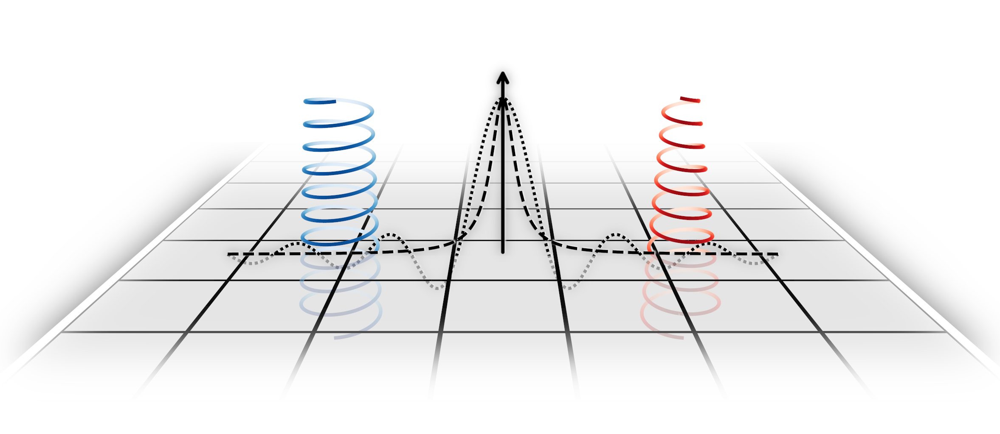

04
Contact
I am happy to discuss my research and explore collaborations. The best way to reach me is by email.
Sascha Jähnigen
Research Associate · Freie Universität Berlin
I am a theoretical chemist fascinated by multiscale chirality and cooperative dynamics in complex systems. My work centers on vibrational optical activity, developing quantum mechanical tools for its calculation, and on ab initio and stochastic molecular dynamics as virtual experiments to simulate realistic molecular motion.
Recent Highlights



We aim for a classification and quantification of supramolecular chirality in liquids, crystals, and at interfaces.
Through Vibrational Circular Dichroism (VCD), we probe how chiral structure manifests in spectral observables, unlocking an atomistic understanding of molecular systems.
We carry out "virtual experiments" through real-time molecular dynamics simulations, combining DFT potentials with stochastic tools to capture realistic molecular motion.
NVPT is our central tool for coupling nuclear and electronic degrees of freedom beyond the Born-Oppenheimer approximation, enabling the calculation of chiroptical properties.
The genesis of OH-stretching vibrational circular dichroism in chiral molecular crystals
Chemical Science 2025, 16, 9833–9842
J. Phys. Chem. Lett. 2024, 15, 8813–8828
Vibrational Circular Dichroism Spectroscopy of Chiral Molecular Crystals: Insights from Theory
Angew. Chem. Int. Ed. 2023, 62, e202303595 · Angew. Chem. 2023, 135, e202303595
Computation of Solid-State Vibrational Circular Dichroism in the Periodic Gauge
J. Phys. Chem. Lett. 2021, 12, 7213–7220
Chirality and Vibrational Circular Dichroism in the Solid State
61st Symposium on Theoretical Chemistry (STC)
Berlin, Germany
Chirality and Vibrational Circular Dichroism in the Solid State
20th International Conference on Chiroptical Spectroscopy
Debrecen, Hungary
Periodic Calculations of Vibrational Circular Dichroism: How are they supposed to work?
123rd Annual Conference of the German Bunsen Society for Physical Chemistry
Aachen, Germany
Vibrational Circular Dichroism of Crystals: The Interplay of Symmetry and Chirality
31st Annual Meeting of the German Crystallographic Society (DGK)
Frankfurt a. M., Germany
Computation of VCD in the Periodic Gauge
7th International Conference on Vibrational Optical Activity (VOA7)
Edmonton, Canada
I am happy to discuss my research and explore collaborations. The best way to reach me is by email.